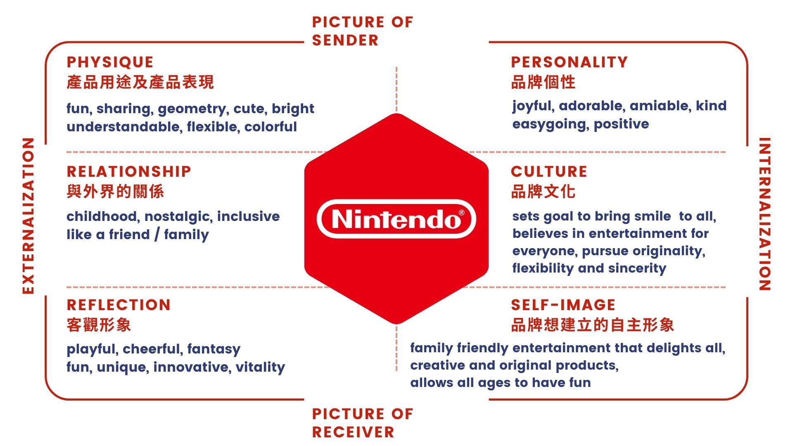
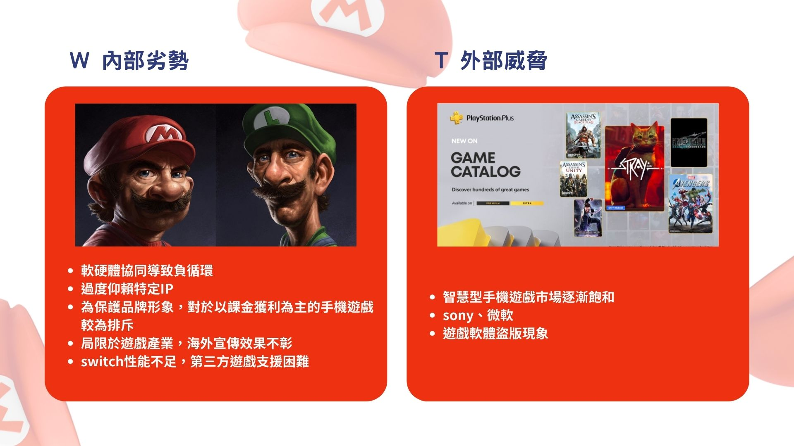
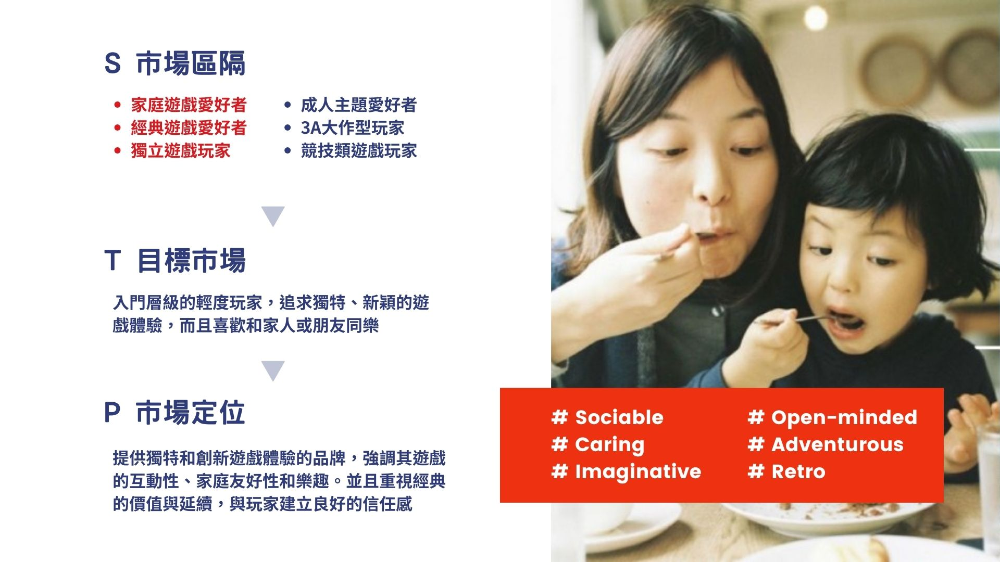
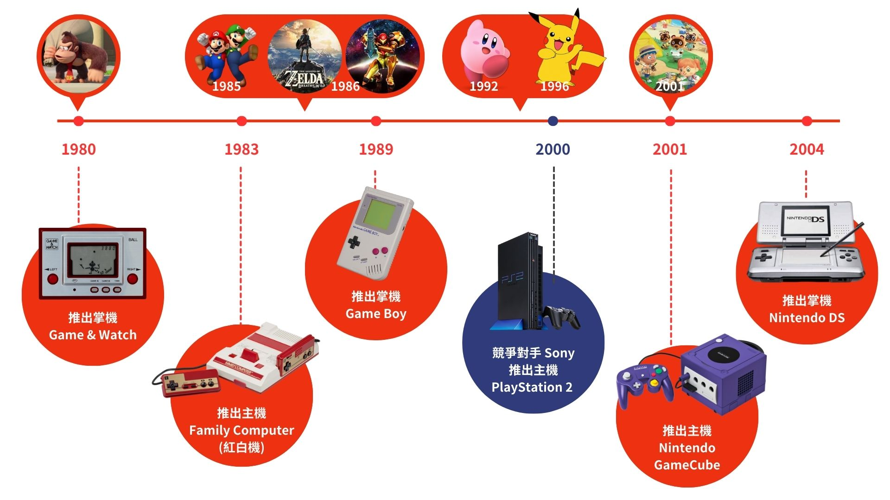
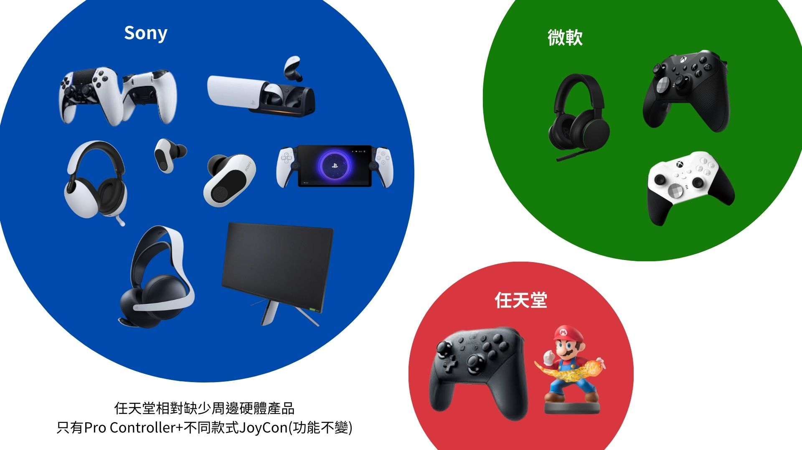
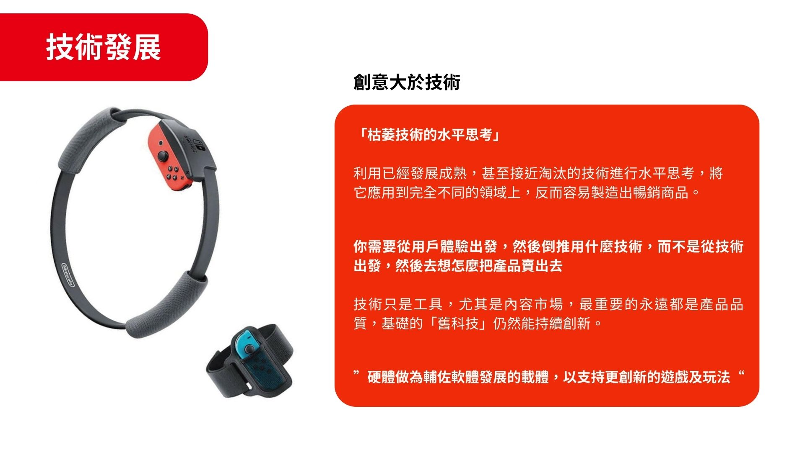
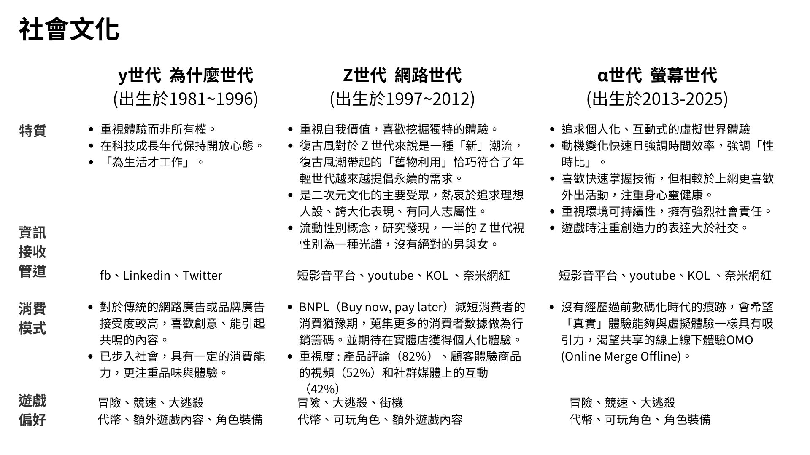
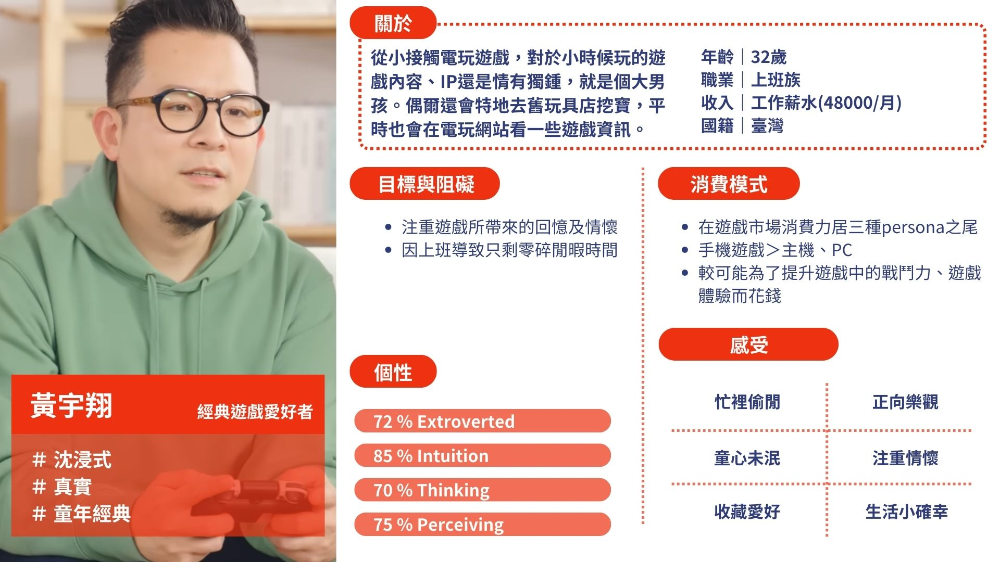
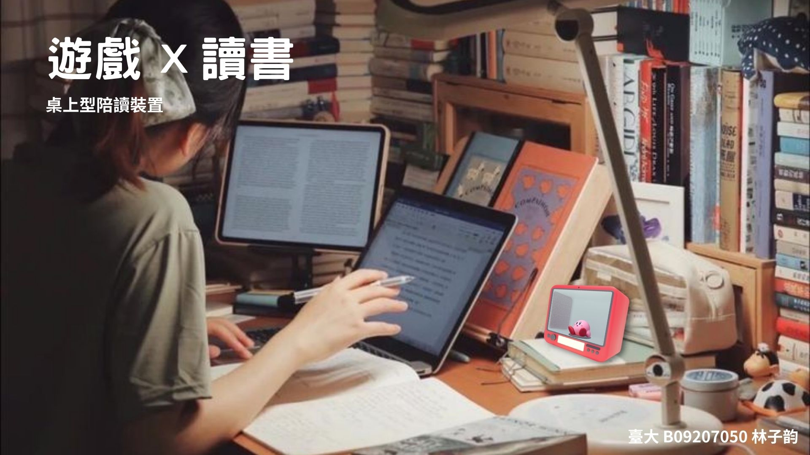

Product Identity Design Strategy,
Nintendo Brand Research / Design
A product design project from course Product Identity Design Strategy, which the goal is to comprehend the identity, image and related market situation for an existing brand, and design a series of new products following the outcome of the previous research and future trends.
Market reserach & Previous product analysis
First, we conducted a thorough research on Nintendo’s brand features with several analyzing tools, and collected information regarding Nintendo’s product timeline as well as all types of competitors.
On the left is the brand identity defined by Nintendo itself
On the right is the brand image that Nintendo actually built according to players feedback, displayed as word cloud
Brand Pyramid of Nintendo
We discover that Nintendo’s essential goal is to provide creative entertainment suitable for all ages, and its greatest advantage is well-known, popular IPs characters and unique ways of game-play.
Brand Identity Prism

SWOT analysis
Its strengths and opportunities include the undeniable creativeness in each of their games, the loyalty of aged players since the childhood it created, and the popular IPs that Nintendo owns.
Its weakness and threats include overly relying on the popular IPs, the lack of ambition in mobile game market while players' general interest shift towards it, and the insistence to not stimulate top up due to the brand’s core value.
STP analysis
Nintendo product timeline

Competitor analysis - Direct Competition
Other gaming devices played with consoles such as PlayStation and Xbox.
Compared to Sony and Microsoft’s various devices, Nintendo’s few devices appear to be a disadvantage.

Competitor analysis - Indirect Competition
Steam PC / Handler Game Platform
A different type of gaming with more game choices that cost less
Mobile Game
Mostly referring to download for free + pay for in-game items games
How mobile games stimulate players to top up in games
1. The simplicity of the top-up operation
2. How top-up could help improve gaming experience
3. Once a player topped up for the first time, it is more likely that this player will stay a loyal player and continue to top up
Competitor analysis - Potential Competition
In terms of “time passing entertainment” , Netflix is huge as a potential competitor to take away consumers' free time.
Design Strategy & Future Trends
Then, we did more research on current trends regarding gaming experiences and drew up design strategies according to the trends and previous research.
Instead of diving into advanced devices, staying creative and focusing more on the innovative path seems more valuable to Nintendo.
Gaming and consuming habits of different generations

In conclusion
> The fastest growing market of gaming is mobile games, followed by console games.
> How a game could provide community, socialness and sense of belonging is an important feature with growing value.
Trends - Law
Recent law and regulation have put more focus on the mental health of children playing video games, encouraging more educational and inspiring games. At the same time, there is propaganda against long hours of gaming.
Trends - Technology & Environment
Environment friendly and digital services are also in the trend.
Trends - Society
After the pandemic, the average hours per week spent on gaming has decreased worldwidely, indicating that people are going back to their usual life before the pandemic.
Persona

Paired SWOT analysis
We ended up selecting the sense of ritual in SO (strength + opportunity) to be the core value of our design strategy. Reason is that Nintendo is great at creating specialness and a sense of ritual in everyday life, which is a trend of modern living.
Final Proposal
Finally, we designed our product following the above strategy. Each member of the team designed one product, and I will be showing my idea and design only.
Gaming is a way of life
Everyday life could be just as fun when Nintendo is involved.
Nintendo Studdy
Your best study buddy to accompany your study session and help you focus.
Gaming × Studying

Study Buddy combines games and study sessions, transferring study hours into valuable items in games. This is an encouragement for gamer students to focus on their academic performances in order to gain power in games.
TA
Students who play Nintendo games and their parents
Features
✓ AI detecting of users status, make sure that they are actually focusing on their studies
✓ Log users’ study hours and turn them into coins, power, equipment and more in Nintendo games
✓ Bestow Nintendo game cartridge and amiibo new meanings
(Counter-clockwise starting from left-top)
> Rounded corner to gather sound coming from two sides to create a 3D surrounded sound effect, making voices of the characters more realistic.
> Put your amiibo in the center of the device, and the voiceover will automatically turn into your character’s voice.
> On / Off
> Selecting console
> Screen that shows current time, studying time, mode and earned reward.
> The slot where you insert a Nintendo game cartridge, and the study time that you followed through will be transferred into valuable items in this game.
> Type C charger
> Camera for motion detect